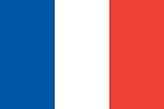

What is the Security Council?

The Security Council (UNSC) is an organ of the UN which is responsible for maintaining peace and security across the world
It consists of 15 countries:
5 of these countries are "permanent" members
- Russia

- USA

- United Kingdom

- China

- France 
These countries have Veto powers, which means they can reject any resolution regardless of the other countries' opinions
If any of the permanent countries leave, the UN is likely to collapse
The other 10 countries are "not-permanent" and are elected by the General Assembly (another organ of the UN) for 2-year-terms.
As of 2024, the 10 elected countries are:
- Albania
- Brazi
- Gabon
- Ghana
- India
- Ireland
- Kenya
- Mexico
- Norway
- United Arab Emirates
Creation of the UNSC
The United Nations Security Council was established as one of the principal organs of the United Nations by the UN Charter, which was adopted on June 25, 1945, in San Francisco at the conclusion of the United Nations Conference on International Organization.
Some more points about the creation of the UNSC are:
- The devastation caused by World War II, including the loss of millions of lives and widespread destruction, created the urgent need for a collective security mechanism to prevent such catastrophic conflicts in the future. The creation of the UNSC was a response to these historical events.
- The 5 permanent members with veto powers where chosen by if they played important role in WW2
- There were 5 countries chosen because the UN aimed to ensure a balance of power and prevent any single country from dominating the Council
How does the UNSC maintain peace?
The Security Council can achieve peace and security through various means:
- Peacekeeping Operations: It can authorise peacekeeping missions to be sent to conflict zones to help stabilize situations and facilitate political processes (basically sending in soldiers)
- Sanctions: It can impose sanctions on countries or entities that threaten international peace and security, aiming to pressure them into compliance with UN resolutions.
- Conflict Resolution: The UNSC can address conflicts and disputes between nations through diplomatic efforts, negotiations, and mediation aiming to resolve the disputes peacefully.
- Military Action: In extreme cases, the Security Council can authorize military action, sending a whole army, to address threats.